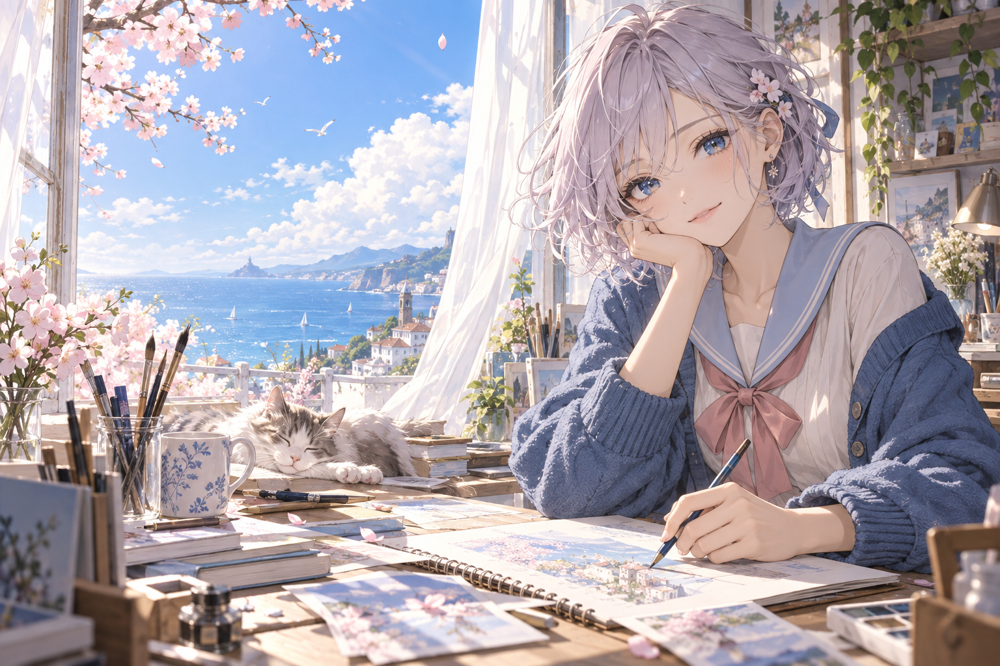
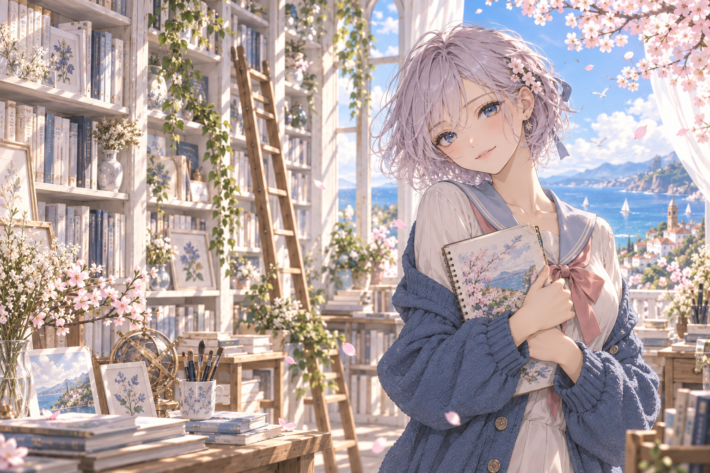

提示词 · 画面描述
海边创作室，蓝天与樱花
轻柔光线，细腻线条
海边创作室，蓝天与樱花
轻柔光线，细腻线条
画幅 1024 × 1024
采样步数 28
种子 随机


静态外观示意 · 用于比较底色与控件的协调性，实际工作流请回到 ComfyUI
编辑提示词，检查参数，运行当前工作流。
保存并组合一段画面描述
海边创作室，樱花，午后的光
分类：场景 / 室内
检索与使用一个标签
blue sky · 蓝天
分类：背景 / 天空
每个图形对应一种用途。切换白天、夜间、多色时，插画、文字和卡片位置保持一致。
选择生成图像的基础模型。
选择附加模型，并在工作流中调整强度。
浏览和管理已保存的模型搭配。
查看大图 · 查看标签 · 收藏
查看大图 · 查看标签 · 收藏
查看大图 · 查看标签 · 收藏